Corte de Haia declara que Mianmar cometeu genocídio contra os rohingyas, e a França pede reunião do Conselho de SegurançaLa Cour de La Haye juge que le Myanmar a commis un génocide contre les Rohingyas, et la France demande une réunion du Conseil de sécuritéHague court rules Myanmar committed genocide against the Rohingya, and France calls for a Security Council meeting
22 NOV 2026 · Anne Lopes
Dois mísseis russos e um drone caem na Polônia durante ataque à Ucrânia: OTAN fala em "grave violação" e a França condenaDeux missiles russes et un drone tombent en Pologne pendant une attaque contre l'Ukraine : l'OTAN parle d'une « violation grave » et la France condamneTwo Russian missiles and a drone come down in Poland during an attack on Ukraine: NATO calls it a "grave violation" and France condemns it
21 NOV 2026 · Silvania Batista
Jovens europeus poderão viver até três anos no Reino Unido: UE e Londres fecham acordo de mobilidade, mas taxas universitárias ficam para depoisLes jeunes Européens pourront vivre jusqu'à trois ans au Royaume-Uni : l'UE et Londres concluent un accord de mobilité, les frais universitaires attendrontYoung Europeans will be able to live in the UK for up to three years: EU and London agree a mobility deal, but tuition fees must wait
20 NOV 2026 · Silvania Batista
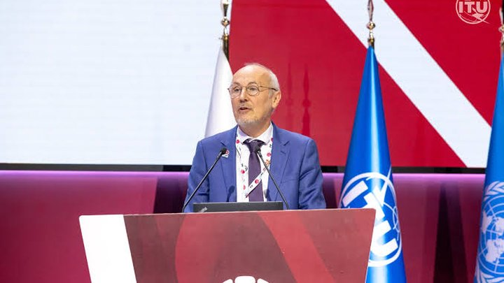
Francês Éric Fournier é eleito para dirigir as radiocomunicações da UIT, agência da ONU para as telecomunicaçõesLe Français Éric Fournier élu à la tête des radiocommunications de l'UIT, l'agence de l'ONU pour les télécommunicationsFrance's Éric Fournier elected to head radiocommunications at the ITU, the UN telecoms agency
17 NOV 2026 · Silvania Batista
Cabo Verde reelege José Maria Neves no primeiro turno, com cerca de 64% dos votos e abstenção recorde perto de 70%Le Cap-Vert réélit José Maria Neves dès le premier tour, avec environ 64 % des voix et une abstention record proche de 70 %Cape Verde re-elects José Maria Neves in the first round with about 64% of the vote and record abstention near 70%
16 NOV 2026 · Silvania Batista
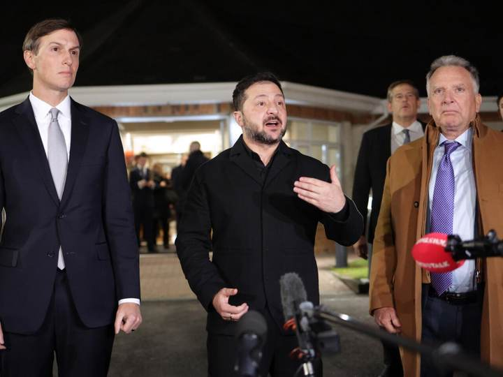
Zelensky diz que os EUA perguntaram se a Ucrânia deixaria o Donbas em troca da entrada na OTANZelensky affirme que les États-Unis ont demandé si l'Ukraine quitterait le Donbass en échange d'une adhésion à l'OTANZelensky says the US asked whether Ukraine would leave Donbas in exchange for joining NATO
16 NOV 2026 · Silvania Batista

Cúpula da Francofonia reúne países de língua francesa em Phnom Penh de 14 a 16 de novembroLe Sommet de la Francophonie réunit les pays francophones à Phnom Penh du 14 au 16 novembreFrancophonie Summit brings French-speaking countries together in Phnom Penh from 14 to 16 November
13 NOV 2026 · Silvania Batista
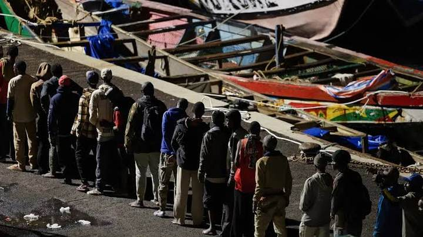
Canárias em emergência migratória: mais de 7 mil chegadas em dez dias pela rota do AtlânticoUrgence migratoire aux Canaries : plus de 7 000 arrivées en dix jours par la route atlantiqueMigration emergency in the Canary Islands: more than 7,000 arrivals in ten days on the Atlantic route
13 NOV 2026 · Silvania Batista
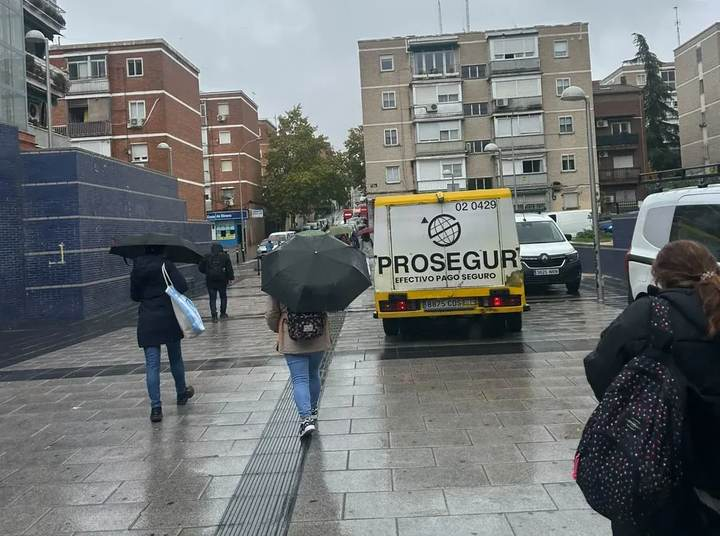
Espanha para por moradia: sindicatos fazem a primeira greve geral em 14 anosL'Espagne à l'arrêt pour le logement : première grève générale depuis 14 ansSpain stops over housing: unions hold the first general strike in 14 years
13 NOV 2026 · Anne Lopes
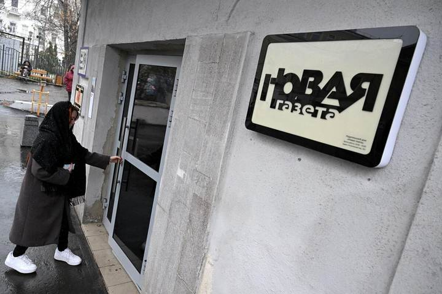
Novaïa Gazeta fecha as portas em Moscou, e a França lamenta "um dia triste para a liberdade de imprensa"Novaïa Gazeta ferme ses portes à Moscou, et la France déplore « un triste jour pour la liberté de la presse »Novaya Gazeta shuts its doors in Moscow, and France calls it "a sad day for press freedom"
9 NOV 2026 · Anne Lopes
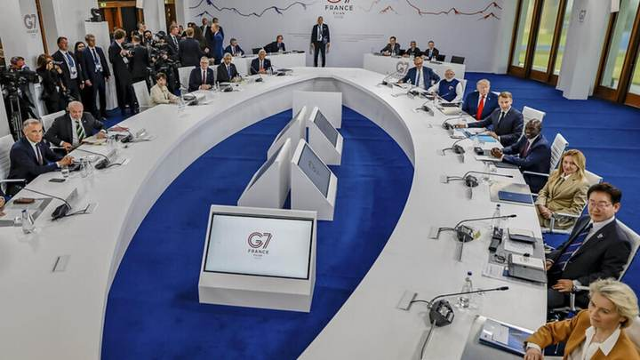
G7 em Paris: chanceleres se reúnem no Quai d'Orsay nesta segunda e terça, com Ucrânia, narcotráfico e IA na pautaG7 à Paris : les ministres des Affaires étrangères réunis au Quai d'Orsay lundi et mardi, avec l'Ukraine, le narcotrafic et l'IAG7 in Paris: foreign ministers meet at the Quai d'Orsay on Monday and Tuesday, with Ukraine, drug trafficking and AI on the agenda
9 NOV 2026 · Anne Lopes
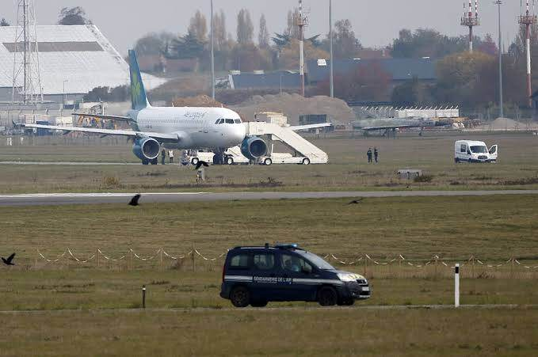
Falsas ameaças de bomba desviam voos na Europa: avião Dublin-Roma pousa escoltado por caças em base aérea da NormandiaFausses alertes à la bombe sur des vols en Europe : un avion Dublin-Rome se pose escorté par des chasseurs sur une base aérienne de NormandieHoax bomb threats divert flights across Europe: Dublin-Rome aircraft lands under fighter escort at a Normandy air base
6 NOV 2026 · Silvania Batista
Eleições de meio de mandato nos EUA: democratas tomam a Câmara e o Senado, e Trump diz que aceita o resultadoÉlections de mi-mandat aux États-Unis : les démocrates prennent la Chambre et le Sénat, et Trump dit accepter le résultatUS midterms: Democrats take the House and the Senate, and Trump says he accepts the result
4 NOV 2026 · Silvania Batista
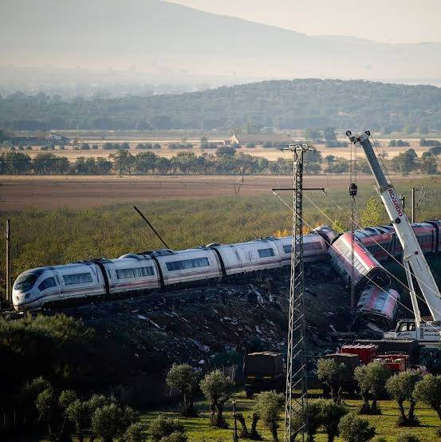
Acidente de trens na Espanha: uma francesa está entre os mortos, confirma o Quai d'Orsay, e o balanço provisório chega a 69 vítimasAccident de trains en Espagne : une Française figure parmi les victimes, confirme le Quai d'Orsay, et le bilan provisoire atteint 69 mortsSpain train crash: a French woman is among the dead, the French foreign ministry confirms, as the provisional toll reaches 69
31 OUT 2026 · Silvania Batista
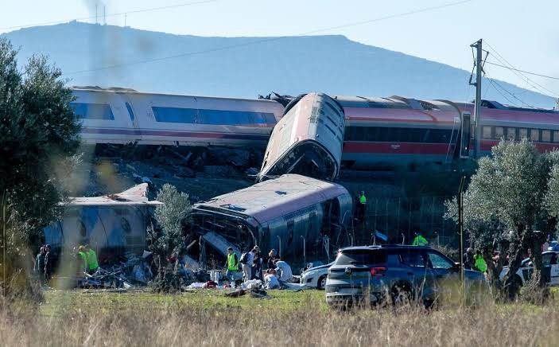
Choque de trens na Espanha: balanço sobe para 68 mortos, e a investigação mira uma ordem do centro de controle de MadriCollision de trains en Espagne : le bilan monte à 68 morts, l'enquête vise un ordre du centre de contrôle de MadridSpain train collision: death toll rises to 68 as investigators focus on an order from Madrid's control centre
29 OUT 2026 · Silvania Batista
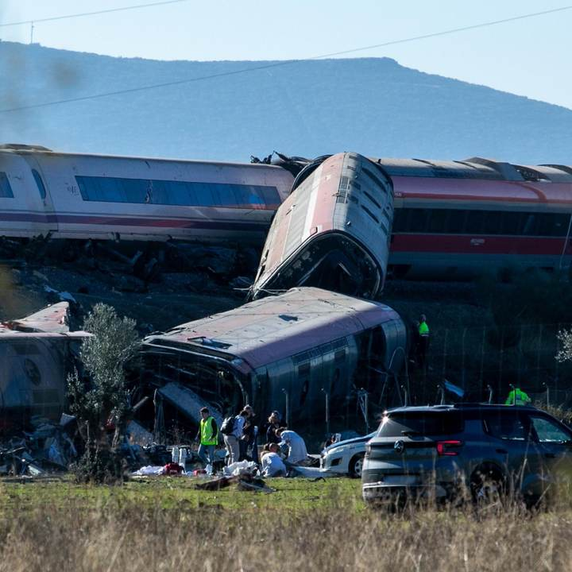
Choque entre um AVE e um Iryo em Toledo deixa dezenas de mortos: o que se sabeCollision entre un AVE et un Iryo à Tolède : des dizaines de morts, ce que l'on saitAVE and Iryo trains collide in Toledo, leaving dozens dead: what is known
28 OUT 2026 · Silvania Batista
Barracas no Rossio: jovens acampam em Lisboa e no Porto contra o preço da moradia e a nova lei do arrendamentoDes tentes sur le Rossio : des jeunes campent à Lisbonne et à Porto contre le prix du logement et la nouvelle loi sur la locationTents in the Rossio: young people camp out in Lisbon and Porto over housing costs and the new rental law
20 OUT 2026 · La rédaction
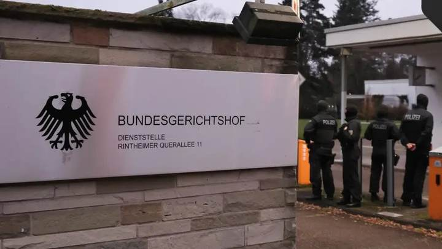
Nord Stream: começa em Hamburgo o primeiro julgamento pela sabotagem dos gasodutos, e a defesa diz que o réu não pode falarNord Stream : à Hambourg s'ouvre le premier procès du sabotage des gazoducs, et la défense affirme que l'accusé ne peut pas parlerNord Stream: the first trial over the pipeline sabotage opens in Hamburg, and the defence says the accused cannot speak
14 OUT 2026 · La rédaction
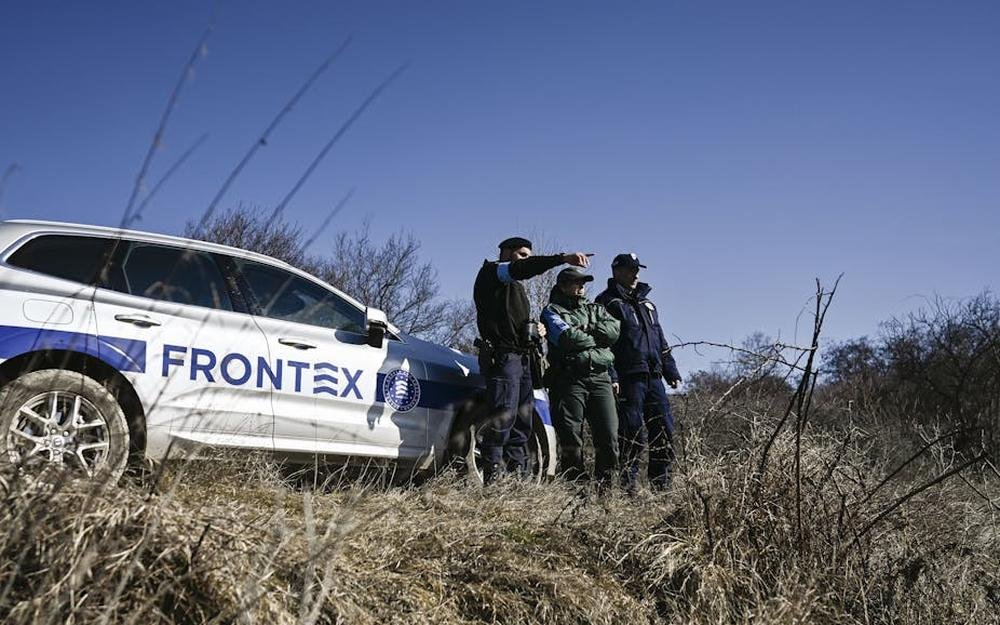
Munique: a Alemanha quer uma Frontex mais forte e uma força europeia de expulsãoMunich : l'Allemagne veut une Frontex renforcée et une force européenne d'expulsionMunich: Germany wants a stronger Frontex and a European expulsion force
27 SET 2026 · La rédaction
Xi e Trump encenam um degelo em Washington. E a Europa, o que ganha com isso?Xi et Trump mettent en scène un dégel à Washington. Et l'Europe, qu'y gagne-t-elle ?Xi and Trump stage a thaw in Washington. And what does Europe get out of it?
26 SET 2026 · La rédaction
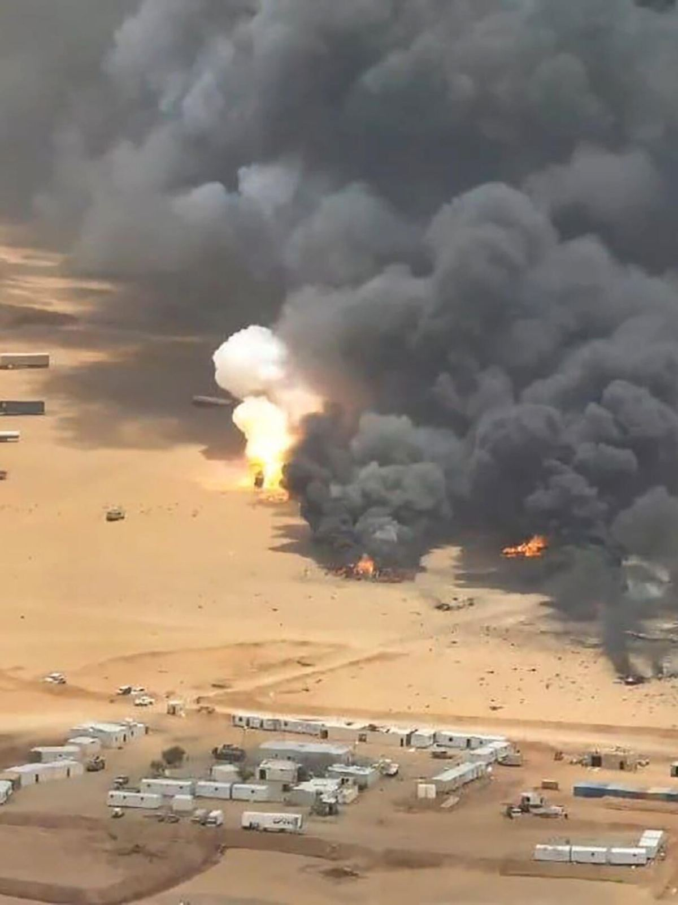
O G7 pede aos Houthis que parem os ataques à Arábia Saudita — e explica por que a bomba pesa mais no seu bolsoLe G7 demande aux Houthis de cesser leurs attaques contre l'Arabie saoudite — et explique pourquoi la pompe pèse plus lourd dans votre budgetThe G7 calls on the Houthis to stop the attacks on Saudi Arabia, and explains why the pump weighs more on your wallet
23 SET 2026 · 6 MIN · PT/FR/EN · La rédaction
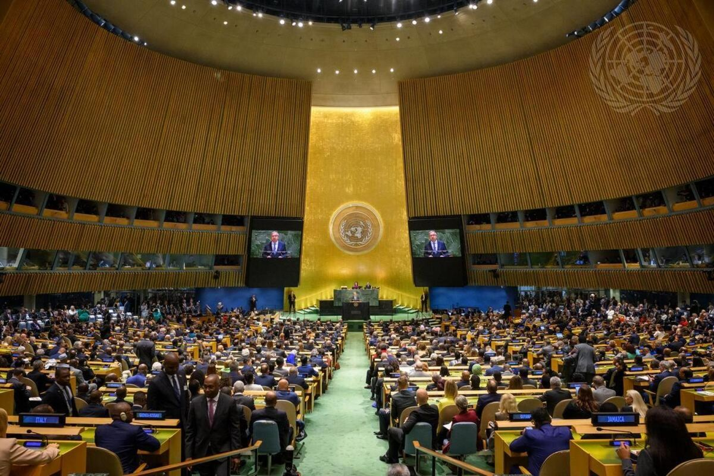
A ONU se reúne e o Brasil fala primeiro: o que está em jogo na 81ª AssembleiaL'ONU se réunit et le Brésil parle en premier : ce qui est en jeu à la 81e AssembléeThe UN convenes and Brazil speaks first: what is at stake at the 81st Assembly
22 SET 2026 · 6 MIN · PT/FR/EN · La rédaction
A UE tropeça na renovação das sanções à Rússia — e um oligarca vira o centro do impasseL'UE trébuche sur la reconduction des sanctions contre la Russie — et un oligarque devient le cœur du blocageThe EU stumbles over renewing its Russia sanctions, and an oligarch becomes the center of the deadlock
22 SET 2026 · 6 MIN · PT/FR/EN · La rédaction
A primeira Duma da guerra: Rússia Unida mantém a maioriaLa première Douma de la guerre : Russie unie garde sa majoritéThe first wartime Duma: United Russia keeps its majority
21 SET 2026 · 5 MIN · PT/FR · La rédaction
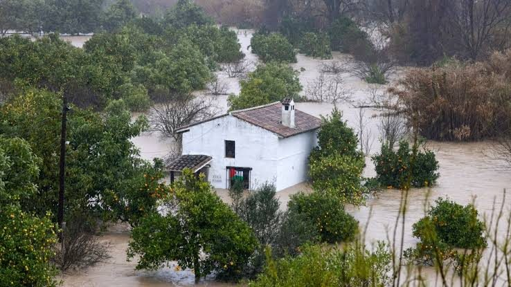
Chuvas torrenciais inundam o litoral mediterrâneo da Espanha e deixam um morto perto de BarcelonaDes pluies torrentielles inondent le littoral méditerranéen espagnol et font un mort près de BarceloneTorrential rains flood Spain's Mediterranean coast, leaving one dead near Barcelona
18 SET 2026 · 5 MIN · PT/FR · La rédaction
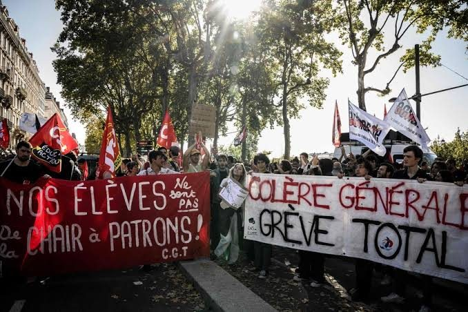
Greve de 29 de setembro na França: o que deve fechar e como se organizarGrève du 29 septembre en France : ce qui devrait fermer et comment s'organiserFrance's 29 September strike: what's likely to close and how to plan
18 SET 2026 · 5 MIN · PT/FR · La rédaction
O enigma romano sob Budapeste: uma construção enorme que ninguém consegue explicarL'énigme romaine sous Budapest : un immense bâtiment que personne n'arrive à expliquerThe Roman enigma beneath Budapest: a huge structure no one can explain
15 SET 2026 · 4 MIN · PT/FR ·
Trump à prova nas urnas: EUA decidem o Congresso em novembroTrump à l’épreuve des urnes : les États-Unis renouvellent le Congrès en novembreTrump put to the test at the polls: the US decides Congress in November
7 SET 2026 ·
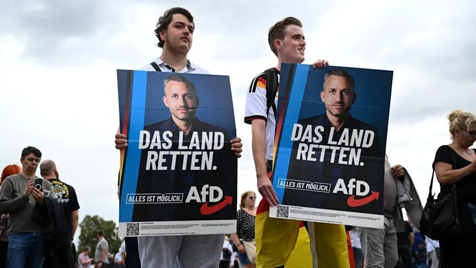
O resultado saiu: AfD confirma 44,2% e reivindica "mandato para governar" — mas ainda falta o governoLe résultat est tombé : l'AfD confirme 44,2 % et revendique un « mandat pour gouverner » — mais il manque encore le gouvernementThe result is in: AfD confirms 44.2% and claims a "mandate to govern" — but a government is still missing
6 SET 2026 ·
Emissários dos EUA levam o plano a Kiev — e Zelensky avisa: a guerra deve "continuar no inverno"Les émissaires américains portent le plan à Kiev — et Zelensky prévient : la guerre devrait « continuer cet hiver »US envoys take the plan to Kyiv — and Zelensky warns: the war is set to "continue through the winter"
6 SET 2026 ·
Da acusação à retaliação: a Rússia fecha o Goethe-Institut e a crise com Berlim vira guerra culturalDe l'accusation à la représaille : la Russie ferme le Goethe-Institut et la crise avec Berlin devient guerre culturelleFrom accusation to retaliation: Russia shuts the Goethe-Institut and the crisis with Berlin turns into a culture war
4 SET 2026 ·
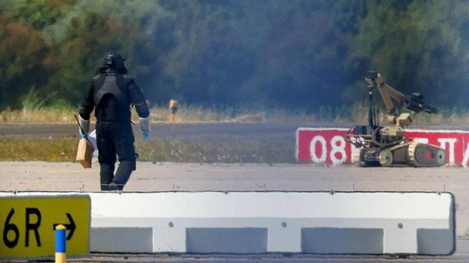
Um drone explosivo num aeroporto alemão e o fechamento de um consulado russoUn drone explosif dans un aéroport allemand et la fermeture d'un consulat russeAn explosive drone at a German airport and the closure of a Russian consulate
3 SET 2026 ·
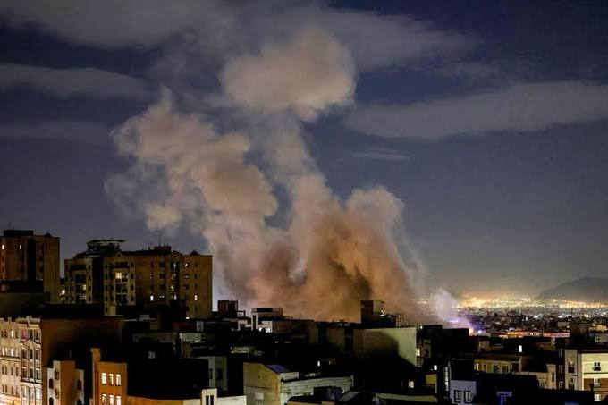
EUA e Irã voltam a trocar ataques e o petróleo supera US$ 95Les États-Unis et l'Iran échangent de nouveau des frappes et le pétrole dépasse 95 $US and Iran trade strikes again and oil tops $95
2 SET 2026 ·
Xi Jinping chega ao Egito e a China amplia a disputa por influência no Oriente MédioXi Jinping arrive en Égypte et la Chine étend sa lutte d'influence au Moyen-OrientXi Jinping arrives in Egypt as China widens its contest for influence in the Middle East
2 SET 2026 ·
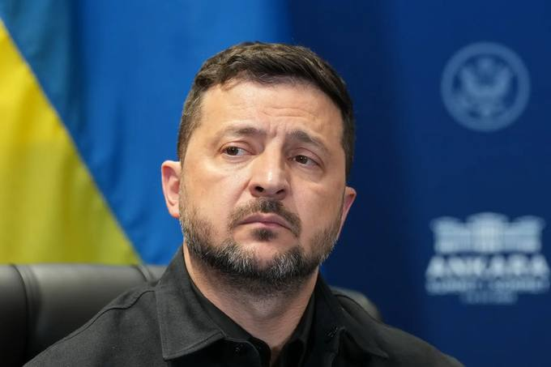
Zelensky faz alerta inédito às companhias aéreas sobre o espaço aéreo russoZelensky lance un avertissement inédit aux compagnies aériennes sur l'espace aérien russeZelensky issues an unprecedented warning to airlines about Russian airspace
2 SET 2026 ·
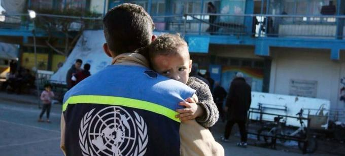
Gaza volta a registrar mortes de crianças enquanto a ONU alerta para crise humanitáriaGaza enregistre de nouveau des morts d'enfants alors que l'ONU alerte sur la crise humanitaireGaza again records children's deaths as the UN warns of a humanitarian crisis
2 SET 2026 ·
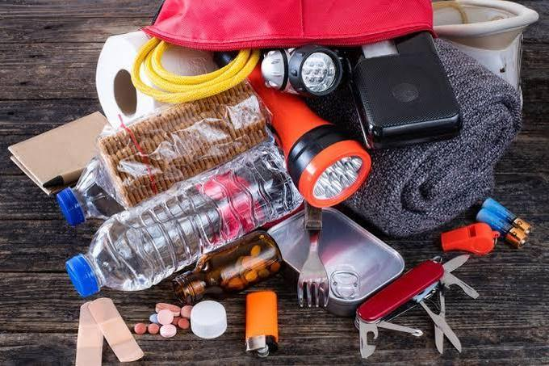
A UE se blinda para uma era de desastres — e pede um kit de 72 horas por famíliaL'UE se blinde pour une ère de catastrophes — et demande un kit de 72 heures par foyerThe EU braces for an era of disasters — and asks for a 72-hour kit per household
1 SET 2026 ·
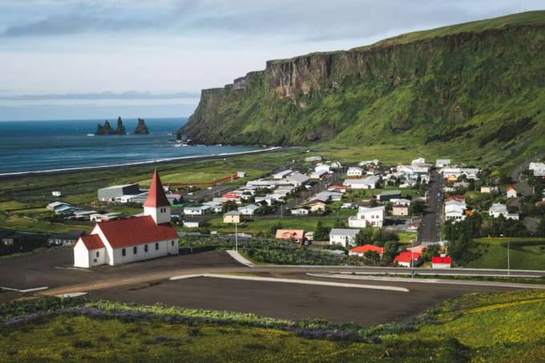
A Islândia disse "não" à UE — de novo (e quase ninguém vai sentir a diferença)L'Islande a dit « non » à l'UE — encore (et presque personne n'en sentira la différence)Iceland said "no" to the EU — again (and almost no one will notice the difference)
1 SET 2026 ·
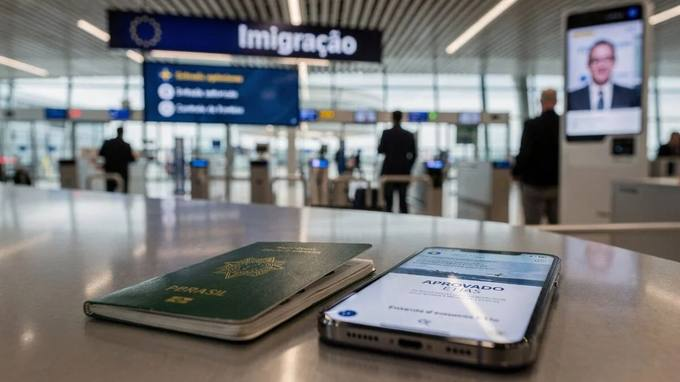
O carimbo no passaporte acabou: o EES já está valendo — e o ETIAS de €20 vem aíLe tampon sur le passeport, c'est fini : l'EES est déjà en vigueur — et l'ETIAS à 20 € arriveThe passport stamp is gone: EES is now in effect — and the €20 ETIAS is coming
31 AGO 2026 ·
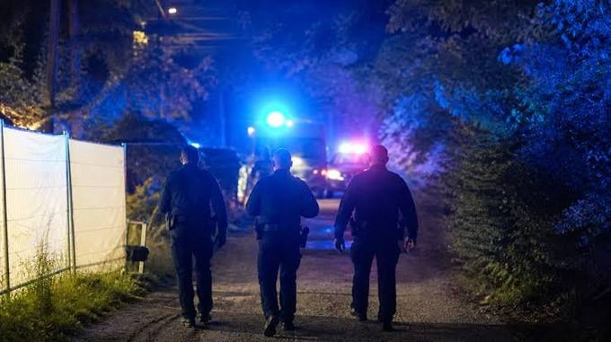
Tiroteio em rave choca a Suíça: jovem de 22 anos morre e cinco ficam feridasFusillade dans une rave en Suisse : une jeune de 22 ans tuée, cinq blessésShooting at a rave shocks Switzerland: a 22-year-old dies and five are injured
30 AGO 2026 ·
A Europa abre uma nova porta para talentos estrangeiros — mas não é um "visto automático"L'Europe ouvre une porte aux talents étrangers — mais ce n'est pas un « visa automatique »Europe opens a new door for foreign talent — but it's not an "automatic visa"
28 AGO 2026 ·
EES e ETIAS: como a Europa vai controlar quem entra — e o que muda para vocêEES et ETIAS : comment l'Europe va contrôler les entrées — et ce qui change pour vousEES and ETIAS: how Europe will control who enters — and what changes for you
26 AGO 2026 ·
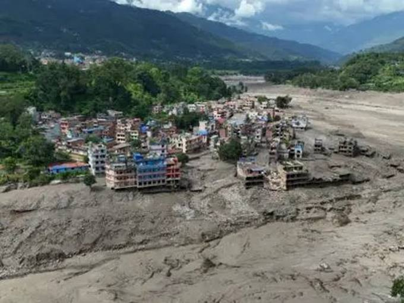
Inundações no Nepal: 384 turistas desaparecidos e um balanço que muda a cada horaInondations au Népal : 384 touristes disparus et un bilan qui change à chaque heureFloods in Nepal: 384 tourists missing and a toll that changes by the hour
26 AGO 2026 ·
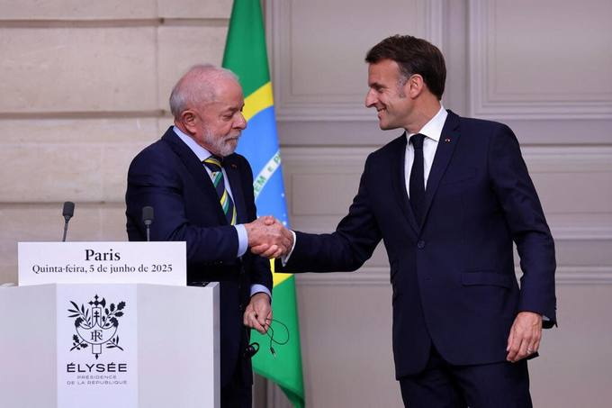
Brasil e França se reaproximam: o que a visita do chanceler muda para os brasileirosLe Brésil et la France se rapprochent : ce que la visite du ministre change pour les BrésiliensBrazil and France draw closer: what the foreign minister's visit changes for Brazilians
24 AGO 2026 ·
Putin ameaça apreender navios europeus e abre nova frente de tensão com a União EuropeiaPoutine menace de saisir des navires européens et ouvre un nouveau front de tension avec l'Union européennePutin threatens to seize European ships, opening a new front of tension with the European Union
12 AGO 2026 · 6 MIN · PT/FR ·
Ucrânia: o possível reforço norte-coreanoUkraine : le possible renfort nord-coréenUkraine: the possible North Korean reinforcement
26 JUL 2026 · 11 MIN · PT/FR ·
Romênia abate segundo drone em dois diasLa Roumanie abat un 2e drone en deux joursRomania downs second drone in two days
26 JUL 2026 · 9 MIN · PT/FR ·
Explosivo interceptado a caminho do NorteUn engin explosif intercepté vers le NordExplosive intercepted on its way to the North
26 JUL 2026 · 9 MIN · PT/FR ·
Macron recebe Trump em VersalhesMacron reçoit Trump à VersaillesMacron receives Trump at Versailles
18 JUN 2026 · 5 MIN · PT/FR ·
O mundo em tempo real: os 8 temas de 2026Le monde en temps réel : les 8 sujets de 2026The world in real time: the 8 themes of 2026
12 JUN 2026 · 4 MIN · PT/FR ·
A UE debate a ampliação — e quer salvaguardasL'UE débat de l'élargissement et de garantiesThe EU debates enlargement — and wants safeguards
12 JUN 2026 · 4 MIN · PT/FR ·
A guerra na Ucrânia redesenha a segurança da EuropaLa guerre en Ukraine redessine la sécurité de l'EuropeThe war in Ukraine redraws Europe's security
12 JUN 2026 · 4 MIN · PT/FR ·
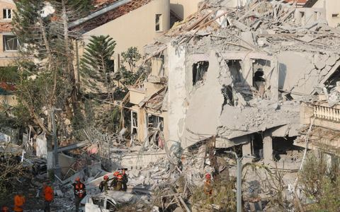
Oriente Médio: a trégua frágil entre Irã, Israel e EUAMoyen-Orient : la trêve fragile Iran-Israël-USAMiddle East: the fragile truce between Iran, Israel and the US
12 JUN 2026 · 5 MIN · PT/FR ·
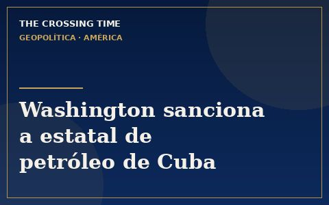
EUA sancionam a estatal de petróleo de CubaWashington sanctionne le pétrole d'État cubainUS sanctions Cuba's state oil company
12 JUN 2026 · 4 MIN · PT/FR ·
Évian: a diplomacia francesa diante do mundoÉvian : la diplomatie française face au mondeÉvian: French diplomacy before the world
25 MAI 2026 · 12 MIN · PT/FR ·
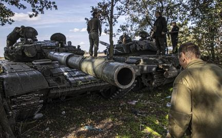
Kyiv sob fogo: o maior ataque em 4 anosKyiv sous le feu : la plus grande attaque en 4 ansKyiv under fire: the biggest attack in 4 years
24 MAI 2026 · 14 MIN · PT/FR ·
14 Juillet: 237 anos que decidem a França14 Juillet, 237 ans plus tard : la date qui décide encore la France14 Juillet: 237 years that define France
14 MAI 2026 · 12 MIN · PT/FR ·
25 anos depois: acordo UE-Mercosul em vigor25 ans plus tard, en vigueur : l'accord UE-Mercosur en dispute25 years later: EU-Mercosur agreement in force
13 MAI 2026 · 10 MIN · PT/FR ·
76 anos de Europa. E de dúvidas.76 ans d'Europe. Et de doutes.76 years of Europe. And of doubts.
12 MAI 2026 · 9 MIN · PT/FR ·